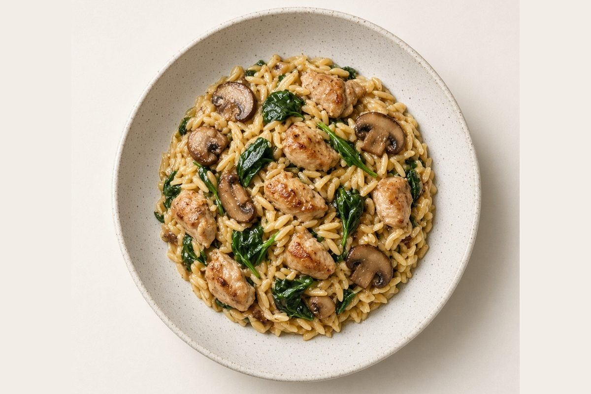
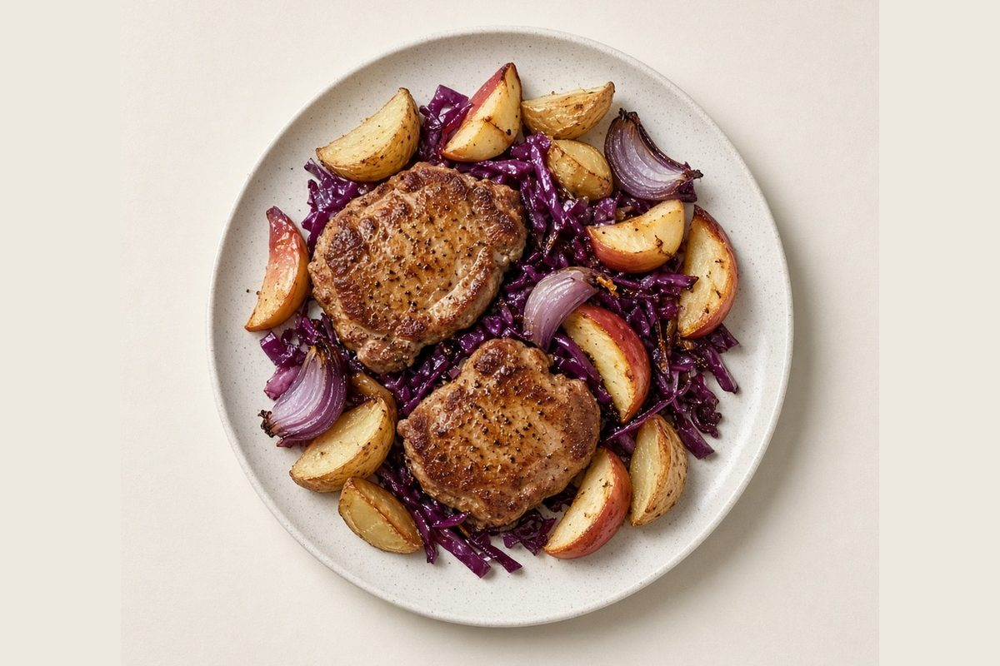
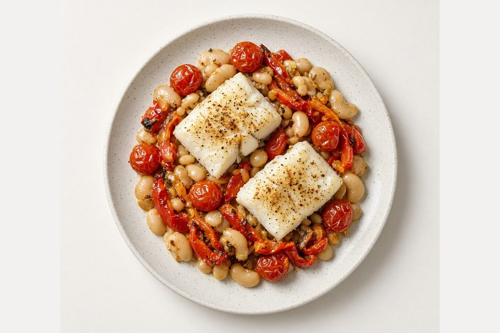

Roast chicken
JudeSet Jude's plain chicken and mash aside before any salted butter or pepper.
Week 4929 Nov – 4 Dec
JudeSet Jude's plain chicken and mash aside before any salted butter or pepper.

JudeTake Jude's portion out before any salt, pepper or crème fraîche goes in.

JudeMove Jude's pork, potato, apple and cabbage out before any salt or pepper goes on the tray.

JudeLift Jude's cod, beans, tomato and pepper out before any salt, pepper or lemon goes on.
Thursday 3 December
Pork stew or shepherd's pie. The beef stew stays off.
Friday 4 December
Bought, not a cookbook recipe. Morrisons spinach and ricotta tortelloni, or The Best burrata ravioli.
Finished
Say how the dinners were, below. The next week's link comes by email on Tuesday, and the home page opens it.
About 1 hr 45 min (40 min hands-on). Serves 2 + Jude, plus leftovers.
JudeBefore step 6: Set Jude's plain chicken and mash aside before any salted butter or pepper.
Finely chopped chicken, no skin, stirred through plain mash with a little milk or unsalted stock. Soft carrot and tenderstem florets as finger food.
Leftover chicken: fridge, eat by Tuesday. Stock: fridge 3 days or freezer 3 months.
30Mon
25 min hands-on, on the table in about 45 min, football night
25 min hands-on, on the table in about 45 min. Half is dinner tonight; half is frozen.. Serves 4 + Jude.
JudeBefore step 4: Take Jude's portion out before any salt, pepper or crème fraîche goes in.
Chicken chopped very small and stirred through the soft orzo, with mushroom, spinach and a little cooking liquid.
One dinner tonight, and two portions in the freezer for about 2 months. Orzo softens, so loosen a frozen portion with a splash of water and reheat until piping hot. Jude's portion is for the night it is cooked.
20 min hands-on. The vegetables start in the oven; the loin is in for about 20 min and comes out once cooked through.. Serves 2 + Jude.
JudeBefore step 3: Move Jude's pork, potato, apple and cabbage out before any salt or pepper goes on the tray.
Pork sliced small, with soft apple, red cabbage and potato from his own dish.
The cooked tray keeps 2 days in the fridge. Reheat until piping hot. It is not one for the freezer. The spare raw half of the loin was frozen on the day.
15 min hands-on, about 20 min in the oven. Serves 2 + Jude.
JudeBefore step 3: Lift Jude's cod, beans, tomato and pepper out before any salt, pepper or lemon goes on.
Flaked cod with every bone checked, soft butter beans squashed a little, and soft tomato and red pepper.
Eat the same night. Cooked cod dries out if it is frozen.
3Thu
From the freezer, freezer night
Pork stew or shepherd's pie. The beef stew stays off.
Out of the freezer: Wednesday 2 December, ready for Thursday 3 December.
4Fri
Already in the fridge, quick pasta
Bought, not a cookbook recipe. Morrisons spinach and ricotta tortelloni, or The Best burrata ravioli.
6 dinners: 5 to cook, 0 leftover nights, 1 from the freezer.
One tap each. It's saved straight away, and Larder adds it to the cookbook after the Sunday review. A rating never changes a recipe by itself.
Roast chicken Sun 29 Nov
One-pot chicken Mon 30 Nov
Pork loin Tue 1 Dec
Baked cod Wed 2 Dec
Pork stew or shepherd's pie Thu 3 Dec
Spinach and ricotta tortelloni or burrata ravioli Fri 4 Dec
Saved on this phone.
No signal, or the other phone not catching up? Send the changes to Larder by email.